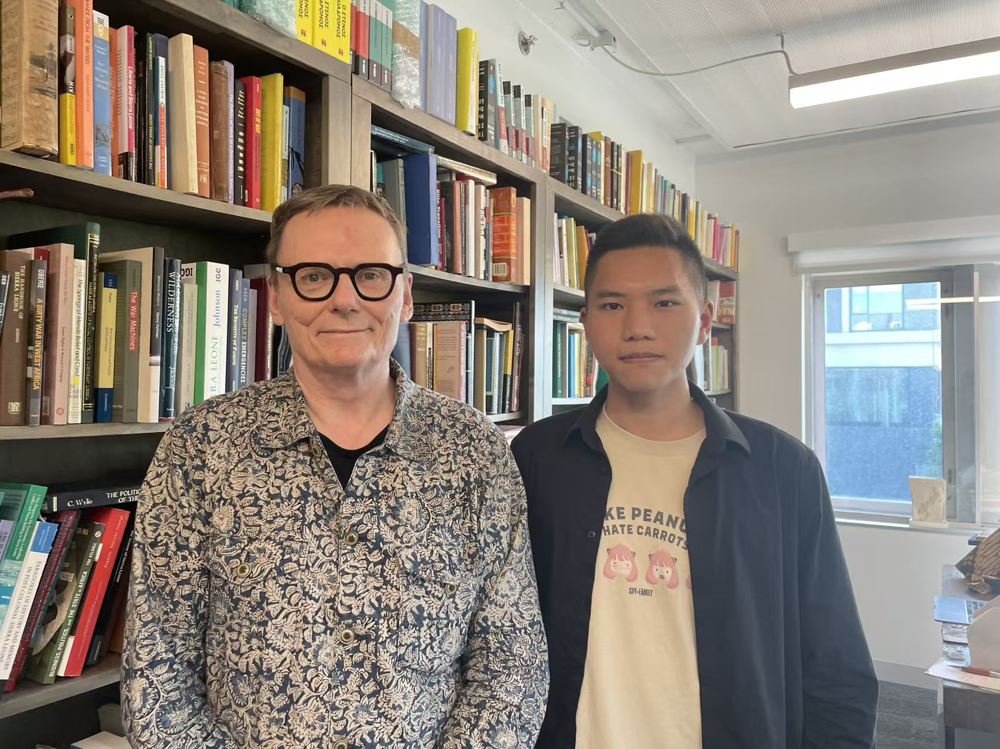
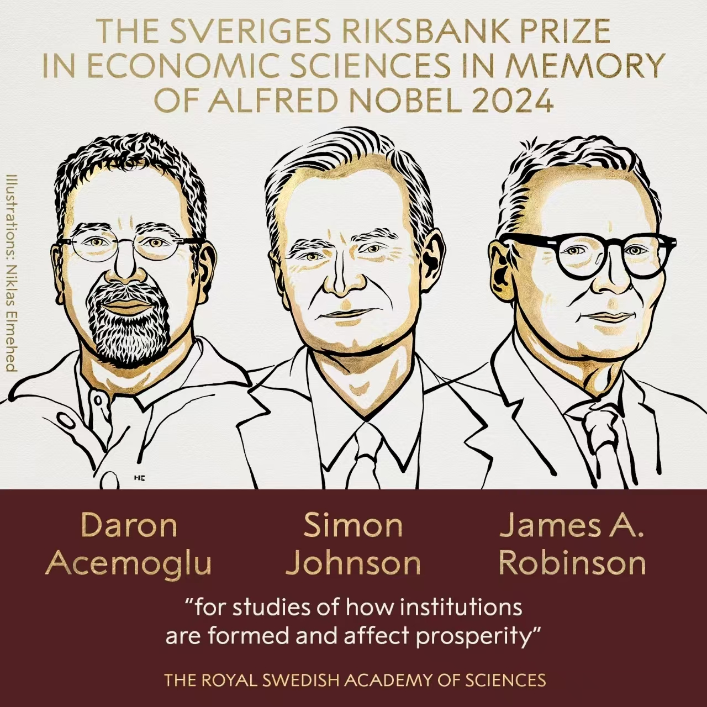

01.1 / CHICAGO
在芝大，与制度问题相遇Chicago & institutions
我在芝加哥大学的学术顾问是 James A. Robinson，2024 年诺贝尔经济学奖得主。他与 Daron Acemoglu、Simon Johnson 共同获奖，研究制度如何形成、如何影响繁荣。My academic advisor at the University of Chicago was James A. Robinson, a 2024 Nobel laureate in Economic Sciences. He shared the prize with Daron Acemoglu and Simon Johnson for studies of how institutions are formed and affect prosperity.

RESEARCH / CREDIBLE COMMITMENTS
可信承诺，如何影响改革成效？How do credible commitments shape reform?
与 Dr. Robinson 的碰撞，也延伸到了我对联合国与安全部门改革的研究：国际介入能否改善安全状况？为什么相似的改革，在不同国家会产生不同结果？Conversations with Robinson also informed my research on the UN and security sector reform: can international engagement improve security, and why do similar reforms lead to different outcomes across countries?
我把跨国数据分析与塞拉利昂、利比里亚的案例比较结合起来：先观察改革授权前后的安全变化，再从本国主导、改革的整体性与国际协作三个角度，追问承诺如何转化为实际行动。I combine cross-country data analysis with a comparison of Sierra Leone and Liberia: first examining security before and after reform mandates, then asking how commitments translate into action through local ownership, comprehensive reform and international cooperation.
研究让我更关注一个问题：改革不仅需要方案，还需要各方兑现承诺的条件。数据帮助识别变化，案例则帮助理解变化背后的制度关系。The research sharpened my interest in the conditions that enable actors to honour commitments. Data helps identify change; case studies help explain the institutional relationships behind it.
这也是一次 AI 驱动的研究实践：将 AI 融入文献综述、数据分析等研究环节，把工具使用与政治经济学的问题意识结合起来。This was also an AI-driven research practice, integrating AI into literature review, data analysis and other research stages while grounding the work in political-economy questions.
旁注：2024 年诺贝尔经济学奖Marginalia: the 2024 Nobel Prize in Economic Sciences
